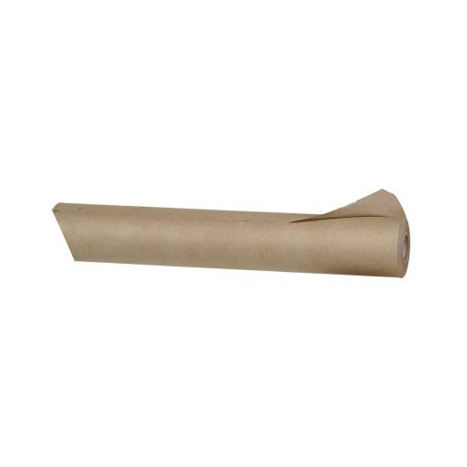
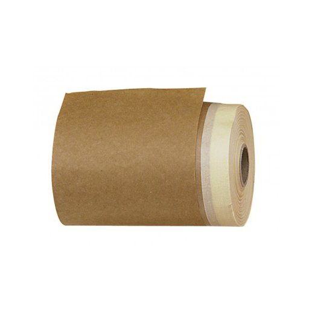
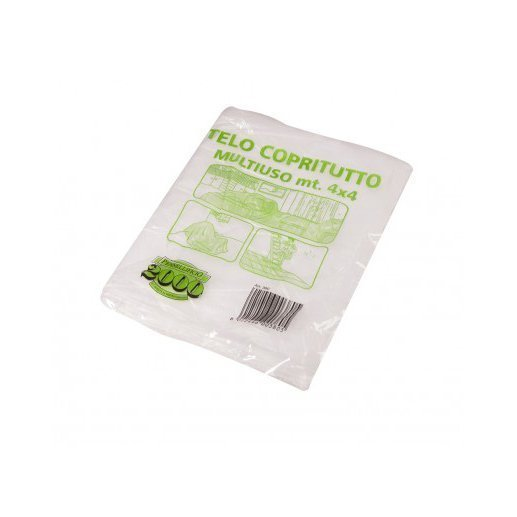
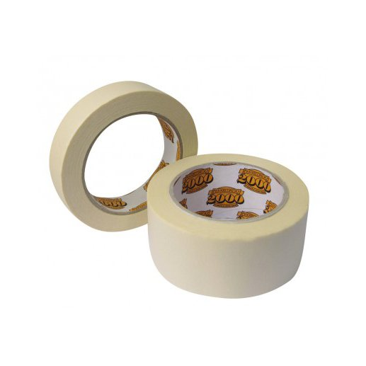
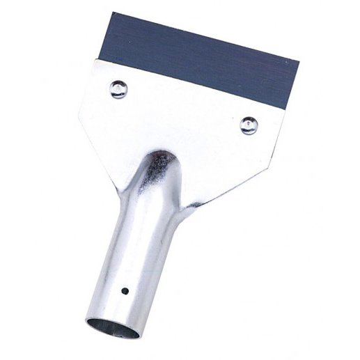
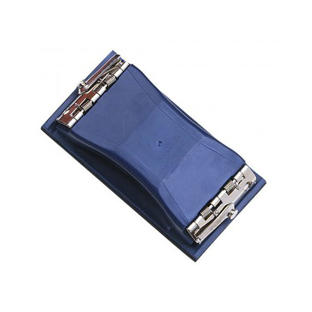

BOBINA CARTA PAPERELLA
Carta Paperella per proteggere bordi e superfici durante i lavori di pittura e finitura, con formato pratico per applicazioni rapide.
Carta, teli, nastri e utensili per organizzare il lavoro, proteggere le superfici e preparare ogni supporto alla finitura. Le fotografie provengono dal catalogo ufficiale Pennellificio Duemila; la presentazione è coordinata con i colori DIGI HOUSE.

Carta Paperella per proteggere bordi e superfici durante i lavori di pittura e finitura, con formato pratico per applicazioni rapide.

Rotolo di carta con adesivo per proteggere e delimitare le superfici durante le lavorazioni di pittura, posa e manutenzione.

Telo protettivo in polietilene per coprire pavimenti, arredi e superfici durante i lavori di pittura e ristrutturazione.

Nastro carta adesivo per mascherature pulite, protezione dei bordi e definizione delle linee durante la pittura.

Raschietto da innestare con lama riportata per rimuovere residui, preparare il supporto e lavorare su superfici da rinnovare.

Tampone per carta vetrata per facilitare la carteggiatura manuale e rendere più uniforme la pressione sulla superficie.